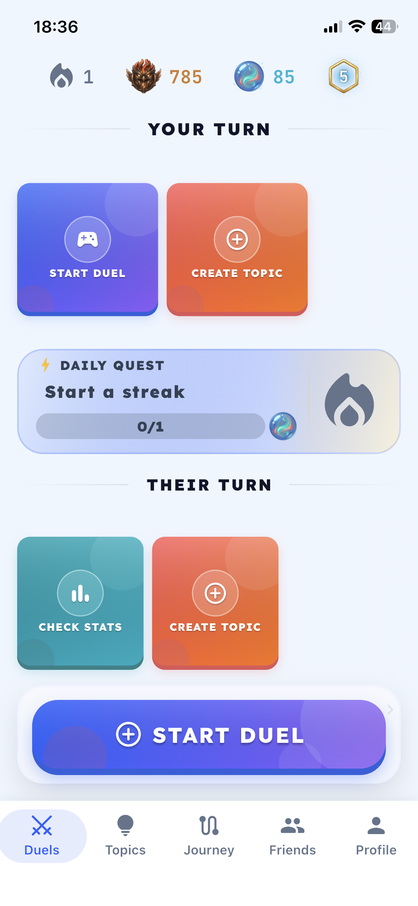
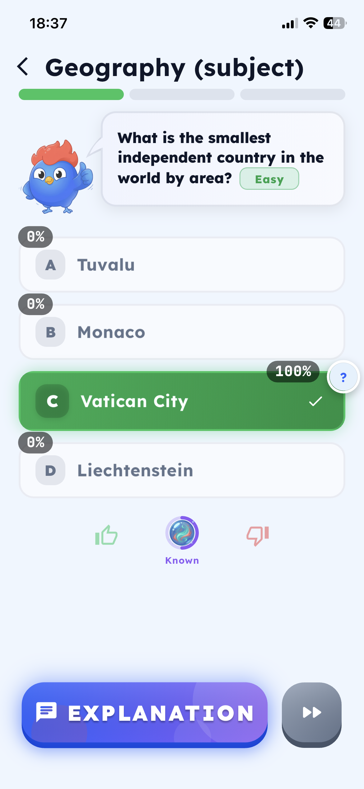
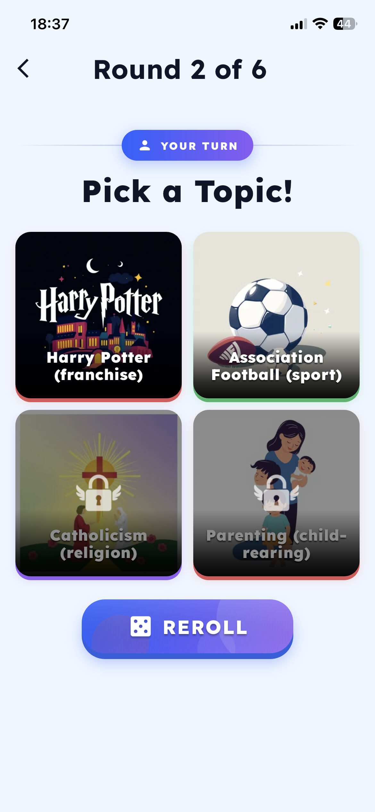

Verktyget
LearnClash är en digital lärplattform där användare tränar sina kunskaper genom quiz-dueller mot andra spelare. Verktyget använder artificiell intelligens för att skapa frågor inom olika ämnen och göra lärandet mer engagerande.
Plattformen fokuserar på spelifiering, vilket innebär att man använder spelmekanismer för att öka motivationen hos användaren. Genom poängsystem, ranking och tävling blir inlärningen både roligare och mer interaktiv.
Vad används LearnClash till?
LearnClash används för att träna och repetera kunskap inom olika ämnen, exempelvis:
- Språk och engelska
- Historia och samhällskunskap
- Sport och allmänbildning
- Provförberedelser
AI-tekniken gör att frågor kan skapas automatiskt beroende på vilket ämne användaren väljer. Det gör verktyget flexibelt och användbart för många olika målgrupper.
Verktyget passar både elever, lärare och personer som vill lära sig nya saker på egen hand. Lärare kan använda det som ett komplement i undervisningen medan elever kan använda det för att plugga på ett roligare sätt.
Användning av verktyget – Use Case
För att börja använda LearnClash behöver användaren först skapa ett konto eller logga in i appen. Därefter väljer man ett ämne som man vill träna på.
När ämnet är valt genererar AI automatiskt frågor. Sedan startar en quiz-duell mot en annan spelare. Båda deltagarna svarar på frågor i flera omgångar och får poäng beroende på hur många rätt de svarar.
Efter matchen visas resultatet och spelarens ranking uppdateras genom ett Elo-system. Felaktiga svar kommer tillbaka senare för repetition, vilket hjälper användaren att lära sig av sina misstag.
Jag testade verktyget genom att välja ett ämne och spela flera quizmatcher. Först testade jag olika funktioner för att förstå hur systemet fungerade. Därefter genomförde jag en hel användning från start till slut där jag valde ämne, spelade matcher och analyserade resultaten.
Fördelar och nackdelar
Fördelar:
- Lärandet blir roligare och mer motiverande
- AI-genererade frågor gör innehållet varierat
- Direkt feedback hjälper användaren att utvecklas
- Repetition av fel svar förbättrar minnet
- Rankingsystem gör att användaren kan följa sin utveckling
Nackdelar:
- Vissa funktioner kan kräva betalning
- Det kan bli mer fokus på tävling än lärande
- AI-genererade frågor kan ibland vara ojämna i kvalitet
Min slutliga analys
Jag tycker att LearnClash är ett bra och modernt AI-verktyg eftersom det kombinerar lärande och spel på ett effektivt sätt. Det gör studier mer intressanta och hjälper användaren att hålla motivationen uppe längre.
Det bästa med verktyget är att man lär sig genom aktivitet istället för att bara läsa teori. Jag tycker också att rankingsystemet och quiz-duellerna gör att man vill fortsätta utvecklas.
Samtidigt finns det vissa nackdelar. Eftersom fokus ligger mycket på tävling kan vissa användare bli mer fokuserade på att vinna än att faktiskt lära sig. Vissa funktioner kan även kosta pengar beroende på vilken version av appen man använder.
Sammanfattningsvis tycker jag att LearnClash är ett effektivt och engagerande AI-verktyg som passar särskilt bra för elever och personer som vill göra lärandet roligare.
Bilder från LearnClash
Nedan visas bilder från verktyget och hur appen fungerar i praktiken.


